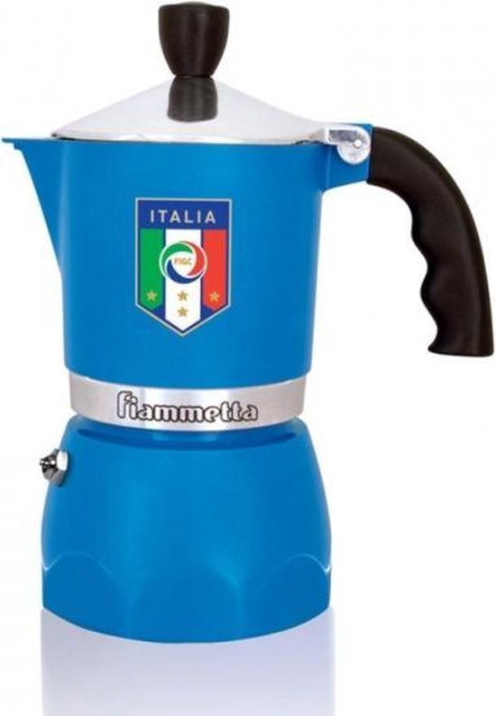

Vergelijkbare producten


We hebben de Bialetti Fiammetta drie maanden gebruikt in onze dagelijkse koffieroutine. Ontdek waarom dit de perfecte eerste percolator is en voor wie dit model de beste keuze is.

De Bialetti Fiammetta combineert alles wat een eerste percolator nodig heeft: eenvoudige bediening, authentiek Italiaans design en een uitstekende koffiesmaak voor een scherpe prijs. Ze is compact genoeg voor een kleine keuken maar sterk genoeg voor dagelijks gebruik.
De Fiammetta is geen toevallige bestseller. Bialetti heeft dit model ontworpen als een compacte, betaalbare versie van de klassieke Moka Express, met hetzelfde octagonale design en dezelfde extractietechniek. Het resultaat is een krachtige, aromatische koffie die typisch is voor de Italiaanse moka-traditie.
Waar duurdere modellen soms extra features bieden die beginners niet nodig hebben, focust de Fiammetta op het essentiële: eenvoud, degelijkheid en smaak. Na drie maanden dagelijks gebruik is er geen sleet zichtbaar en de koffiekwaliteit blijft constant. Voor de prijs is dat uitzonderlijk.
Meer capaciteit (2–9 kops), zelfde prijs range. Beter voor grotere huishoudens.
Bekijk reviewRVS, geschikt voor inductie. Beter als je een moderne kookplaat hebt.
Bekijk reviewDubbele drukkamer voor meer crema. Ideaal als je meer espresso-karakter wilt.
Bekijk reviewDe Fiammetta is onze absolute #1 keuze voor beginners en voor wie een compacte, betrouwbare percolator zoekt voor dagelijks gebruik. Uitstekende koffiesmaak, robuust design, scherpe prijs. Heb je inductie, bekijk dan zeker de Venus.
€34,95
✓ Op voorraad